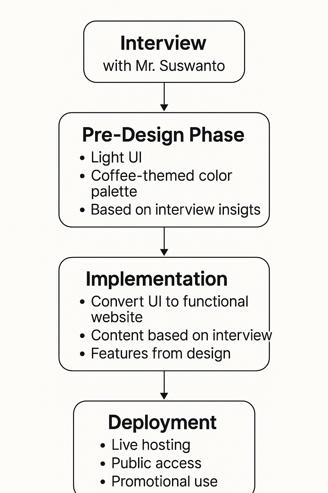

Project Details
Promotion Website
A promotion website is a type of website designed to introduce, market, and increase awareness of a product, service, or brand to a wider audience. It typically highlights key features, benefits, and unique selling points through engaging visuals, persuasive content, and clear calls-to-action. For small businesses or local brands like UMKM, a promotion website serves as a powerful digital tool to build credibility, reach potential customers beyond their local area, and drive sales or interest through online presence.
Workflow
Interview
Requirement Compilation (UML)
Implementation
Testing

Gambuhan Coffee
Discover the rich, authentic flavors of Gambuhan Coffee, a local coffee brand proudly rooted in the highlands of Gambuhan Village, Pulosari, Pemalang. Grown with care by dedicated farmers and processed using traditional methods, our coffee brings the essence of the village to every cup.This website is a portfolio project to support the promotion of this local small business (UMKM), highlighting its products, stories, and impact on the community. Through clean design and informative content, we aim to connect coffee lovers with the unique heritage and potential of Gambuhan Coffee.Join us in celebrating local craftsmanship and taste the difference of homegrown excellence.
- Interview
- Pre-Design
- Implementation
- Deploy
The project began with a direct interview with Mr. Suswanto, the local coffee farmer and key figure behind Gambuhan Coffee. This step was crucial to gather authentic information about the brand, including its origin, production process, values, and business challenges. The insights obtained helped shape a clear understanding of what the website should communicate and who the target audience is. This stage laid the foundation for the entire design direction and content structure of the website.
Based on the interview findings, a pre-design phase was carried out. The goal was to conceptualize a simple and user-friendly interface that visually represents the identity of Gambuhan Coffee. Earth tones like browns and creams were chosen to reflect the warm, natural feel of coffee, while clean layouts ensured accessibility and focus on content. This phase involved wireframes and mood boards, ensuring that the design direction aligned with the brand story captured during the interview.
Once the design concept was finalized, the next step was implementation. This involved translating the visual design into a functional website using front-end and back-end development tools. Key components such as product highlights, brand story, photo galleries, and contact forms were integrated. The development strictly followed the design guidelines set during the pre-design phase, and the content was structured based on the real insights gained from the interview. This ensured both functional accuracy and narrative consistency.
After development and testing were completed, the website was deployed to a live hosting environment. This made the website publicly accessible and ready for promotional use. The deployment marked the transition from a development project to a fully operational promotional tool. It served as the final step, bringing together all the previous workflows — the content from the interview, the aesthetics from the pre-design, and the features from the implementation — into one cohesive, working platform that effectively promotes Gambuhan Coffee to a wider audience.
Workflow Diagram :
